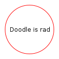

Using Algebras
This section gives recipes for using Doodle's algebras, targetting one backend or working across multiple backends. You should be familiar with the concepts behind Doodle to understand everything here.
Using a Single Backend
Using a single backend should be straightforward:
- Import the Doodle core, syntax, and the backend you're using.
- Construct pictures using the methods on the
Pictureobject. - Compose
Picturesusing the methods provided by the syntax imports.
For example, the following imports are used for the Java2D backend:
import doodle.java2d.*
import doodle.core.*
import doodle.syntax.all.*Given these imports we can create pictures. To construct atomic elements we call the constructors on Picture.
val smallCircle = Picture.circle(100)
val largeSquare = Picture.square(200)When we have some pictures we can compose them using the methods provided by the syntax import.
val composition =
smallCircle
.fillColor(Color.crimson)
.noStroke
.on(largeSquare.fillColor(Color.midnightBlue).strokeWidth(5))Naturally we might want to draw our creation. For this we need another import
import cats.effect.unsafe.implicits.globalNow we can call draw
composition.draw()producing the masterpiece shown below.
As we've seen, using the algebras is mostly as simple as using Image. The only issue you might see is that the error messages can be a bit harder to interpret.
Using Backend Specific Features
Using backend specific features follows the same pattern as using a single backend. Here's an example using the Bitmap algebra, which is currently only supported by the java2d backend. (The bitmap used is the Old God created by Kevin Chaloux and released under Creative Commons.)
The first step is, as before, to import the Doodle core, Java2D backend, syntax extensions, and the Cats Effect runtime.
import doodle.core.*
import doodle.java2d.*
import doodle.syntax.all.*import cats.effect.unsafe.implicits.globalNow we can go about creating our picture, using the read method to load a bitmap image.
val redCircle = Picture.circle(100).strokeColor(Color.red)
val twoRedCircles = redCircle.beside(redCircle)
val oldGod = Picture.read("old-god.png")We can combine this bitmap value with other pictures in the usual way.
twoRedCircles.above(oldGod)We can then draw it using the draw method, which produces the output shown below.
Creating Cross-Backend Pictures
Targeting multiple backends requires a little bit more work than working with a single backend. We can't use the usual constructor methods on a Picture object, as those methods target a specific backend and we want to work across multiple backends. However, every constructor method has a syntax equivalent that we can call. So to create a circle we can write
circle(100)Once we know how to do this, everything proceeds as before. Here's a complete example.
val redCircle = circle(100).strokeColor(Color.red)
val rad = text("Doodle is rad")
val picture = rad.on(redCircle)We can then draw the picture as before. In this case we get the output below.

Using Raw Algebras
We never need to call methods on algebras directly. Doodle provides the Picture abstraction and lots of syntax to avoid this. However, if some reason you did want to use algebras directly here is how to do it. Understanding this does help a bit in understanding the utilities that Doodle provides to avoid using algebras directly.
To use algebras directly, write a method with a parameter that is the algebras that you need. For example, if we were to write a simple program using Layout, Style, and Shape we might write the following.
import doodle.algebra.*
// Two red circles beside each other
def twoRedCircles[Alg <: Layout & Style & Shape](algebra: Alg): algebra.Drawing[Unit] = {
val redCircle = algebra.strokeColor(algebra.circle(100), Color.red)
algebra.beside(redCircle, redCircle)
}This is not a convenient way to write code, so don't do it unless you have a good reason.